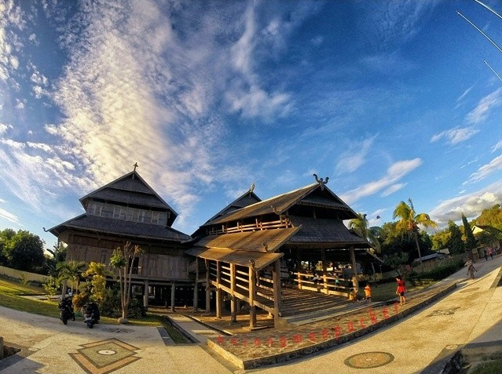
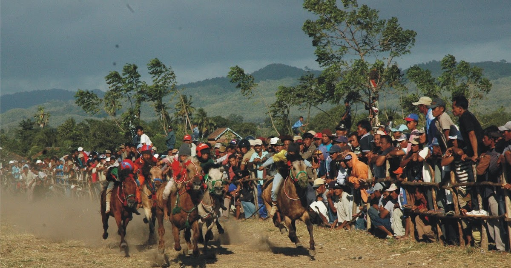
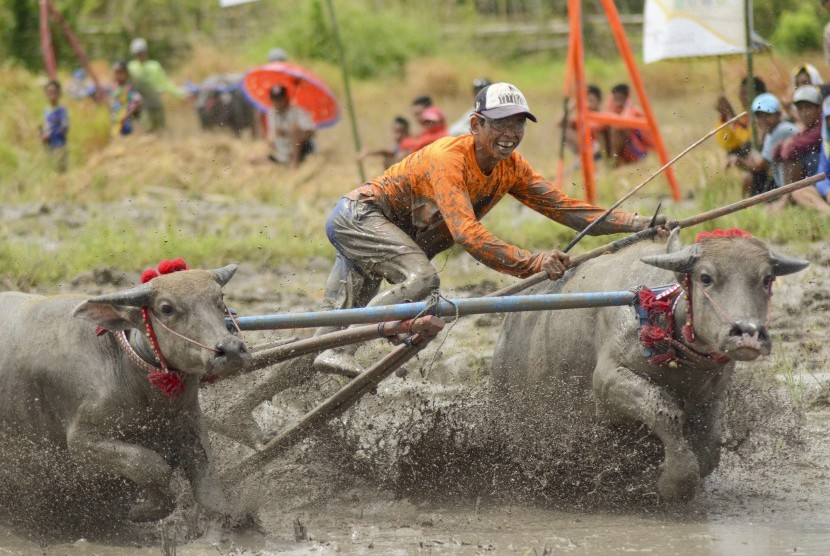
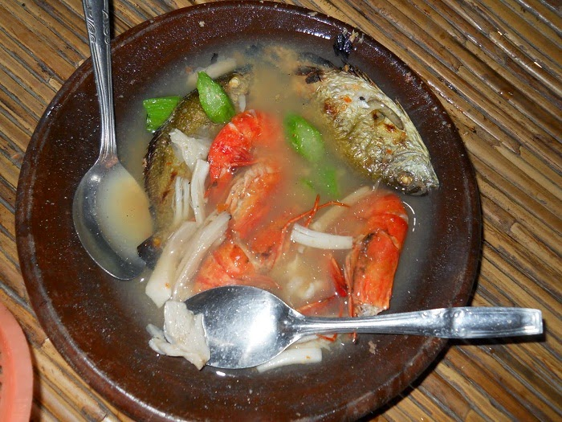
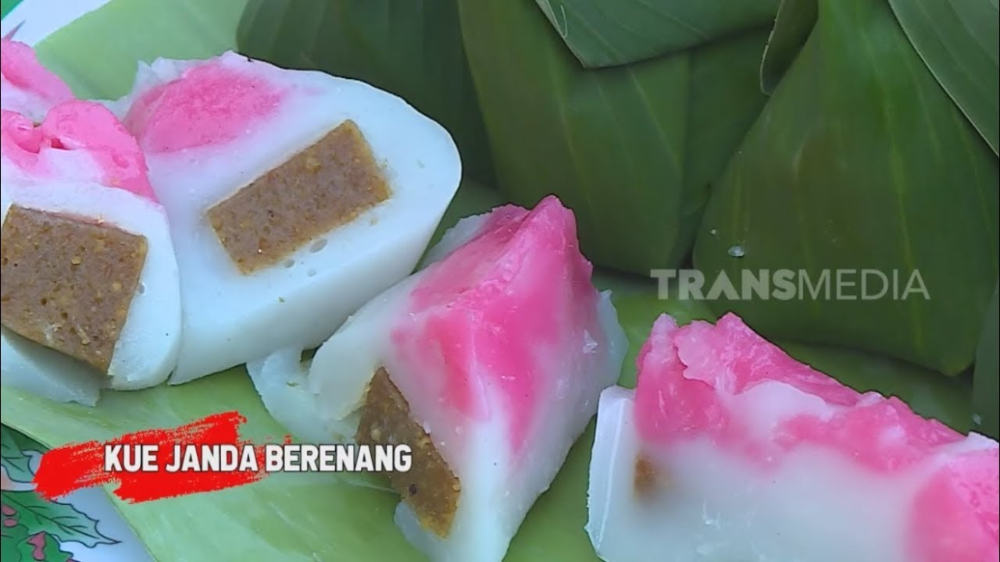
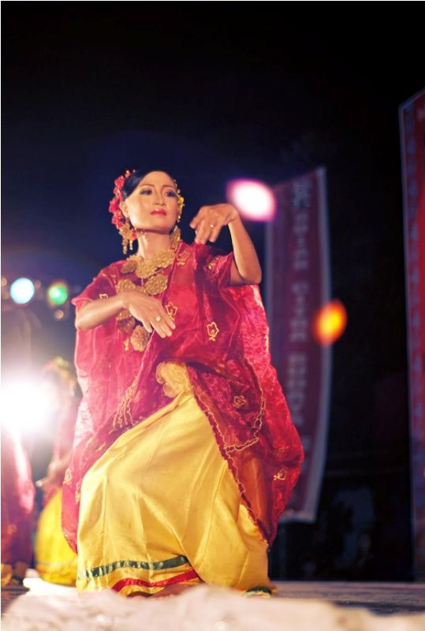

Welcome to Sumbawa
Pulau Sumbawa adalah sebuah pulau yang terletak di provinsi Nusa Tenggara Barat, Indonesia. Pulau ini dibatasi oleh Selat Alas di sebelah barat, Selat Sape di sebelah timur, Samudra Hindia di sebelah selatan, serta Laut Flores di sebelah utara. Kota terbesarnya adalah Bima, yang berada di bagian timur pulau ini.
-
 Istana Dalam Loka ( RUMAH ADAT )
Istana Dalam Loka Merupakan Rumah Adat dari Suku Sumbawa dibangun pada 1885 oleh sultan ke-16 dari Dinasi Dewa Dalam Bawa, Sultan Muhammad Jalaluddin Syah III. Dahulu, Istana Dalam Loka merupakan kediaman raja beserta keluarga, sekaligus sebagai pusat pemerintahan. Istana Dalam Loka adalah kompleks pemukiman kerabat kerajaan dengan segala perangkatnya, termasuk salah satunya adalah bangunan Bala Rea -
 Main Jaran ( KULTUR BUDAYA SUMBAWA )
Maen Jaran atau pacuan kuda adalah merupakan permainan yang sangat digemari oleh penduduk Kabupaten Sumbawa, selain menjadi atraksi hiburan, juga menjadi ajang meningkatkan harga jual kuda, karena kuda yang biasanya menjadi pemenang harga jualnya tinggi. Harganya bisa mencapai ratusan juta rupiah -
 Barapan Kebo ( KULTUR BUDAYA SUMBAWA )
Barapan Kebo atau Karapan Kerbau ala Sumbawa ini diselenggarakan pada awal musim tanam padi. Lokasi atau arena Barapan Kebo adalah sawah yang telah basah atau sudah digenangi air sebatas lutut -
 Sepat ( MAKANAN KHAS )
Sepat Adalah Makanan Khas Sumbawa Berbahan dasar dari Belimbing wulu air dari belimbing wulu tersebut yang dijadikan sepat yang membuat rasa dari sepat tersebut menjadi lebih segar dan juga bisa ditambahkan dengan terong bakar -
 Janda Berenang ( JAJANAN KHAS )
Janda berenang adalah salah satu kue atau jajan khas yang berasal dari daerah Sumbawa. Kue tersebut terbuat dari tepung maizena, kacang hijau yang dihaluskan dan gula merah serta dibungkus dengan daun pisang -
 Tari Nguri ( TARIAN KHAS )
Tari Nguri, Tarian tradisional dalam tradisi dari masyarakat di daerah Sumbawa. Biasanya tarian ini disaksikan saat menyambut tamu atau pada acara tertentu, Tarian tradisional ini berasal dari daerah Sumbawa, Nusa Tenggara Barat
AYO KE SUMBAWA !
SABALONG SAMALEWA